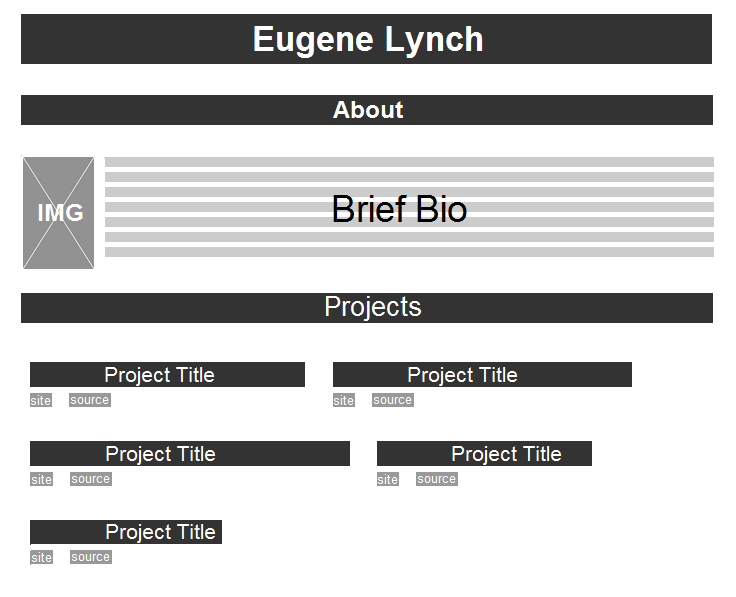

I've learned a bit more about html/css standards, responsive design, and UX since the first version of my site. Here, I'll be redesigning my site using what I've since learned.

My website should be very simple. There are only two important things to present: myself, and my work. As such, I've divided my site into two parts: an about section, and a projects section.
At the very top is my name. In the about section, I'll have an image of myself, and a brief bio. In the projects section, I'll have all my projects housed in little containers. Each project container will have the title, a link to the website, and a link to the source code on github.
The only UX changes I think I need to make are making the line-height of the bio section larger, so that's it's easier to read.
Since my site is so simple, it will be very easy to make it responsive. I'll set a max-width on the body and leave the width of most of my elements unformatted, so that everything sort of wraps around neatly when the screen is made smaller.
More detail: in the about section, I'll have the image float left, with a margin on the right, so that the text wraps around the image when the screen is smaller.
In the Projects section, I'll have the project containers and their content float left, so that everything adapts fluidly when the screen size changes.